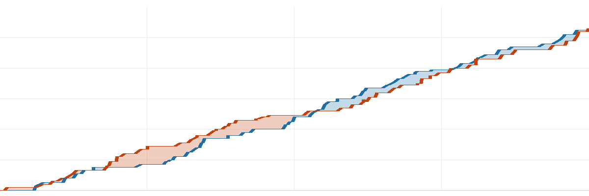

球不落·NBA 每日战报
2026-11-17美国时间
共 5 场 ｜ 每行格式：客队 比分 : 比分 主队
今天 5 场，最胶着的是黄蜂 114-118 湖人：交替领先 8 次，打平 5 次，打到加时才分出胜负，湖人一度落后 18 分。
焦点球星3 人
东契奇36分6板 7助·湖人 胜 黄蜂
文班亚马25分18板 4助·马刺 负 活塞
杨瀚森（未出场）开拓者 负 森林狼
今日炸裂表现上榜2 人
单节 21 分 · 轰下 47 分格莱姆斯47分6板 3助· 湖人 胜 黄蜂
单节 25 分 · 轰下 40 分森萨博40分11板 5助· 爵士 胜 快船
今日破纪录1 条
球星1 条
格莱姆斯 · 生涯新高 47 分· 黄蜂 114-118 湖人
推荐比赛4 场
夯今日最胶着
| 1 | 2 | 3 | 4 | OT |
| 分节 | 34-30 | 32-29 | 28-22 | 17-30 | 3-7 |
加时赛
湖人一度落后 18 分，翻盘赢 4 分。
| 黄蜂 | 布兰登·米勒28分2板4助·里德23分11板4助·科比·怀特19分3板4助 |
| 湖人 | 格莱姆斯47分6板3助·东契奇36分6板7助·塞克斯顿10分4板3助 |
|
命中率 |
三分 |
篮板 |
助攻 |
失误 |
| 黄蜂 |
46 | 33 | 51 | 24 | 20 |
| 湖人 |
41 | 36 | 50 | 21 | 14 |
北京 12:00 开球 ｜ 黄蜂 4-10 ｜ 湖人 13-2
夯值得看 · 最后 3 秒反超准绝杀麦克丹尼尔斯剩 2.6 秒投进反超球，此后对手再没得分
| 1 | 2 | 3 | 4 |
| 分节 | 17-29 | 31-20 | 31-30 | 26-27 |

开拓者森林狼横轴为比赛进程
全场交替领先 12 次、打平 3 次，森林狼最后阶段才拉开 1 分。
| 开拓者 | 利拉德25分3板5助·霍勒迪23分5板6助·克林根12分12板5助 |
| 森林狼 | 多孙穆30分4板5助·麦克丹尼尔斯22分5板4助·拉梅洛·鲍尔18分9板2助 |
|
命中率 |
三分 |
篮板 |
助攻 |
失误 |
| 开拓者 |
40 | 36 | 46 | 23 | 17 |
| 森林狼 |
46 | 45 | 46 | 22 | 21 |
北京 09:00 开球 ｜ 开拓者 9-5 ｜ 森林狼 11-4
今日最佳一球
麦克丹尼尔斯 准绝杀
开拓者 105-106 森林狼 · 第四节结束
顶级值得看 · 落后 13 分翻盘
| 1 | 2 | 3 | 4 |
| 分节 | 23-29 | 31-21 | 26-33 | 31-19 |
全场交替领先 12 次、打平 14 次，尼克斯最后阶段才拉开 9 分。
| 尼克斯 | 布伦森31分5板5助·布里奇斯17分5板1助·阿努诺比16分4板 |
| 猛龙 | 贾科比·沃尔特25分1板2助·巴雷特22分5板5助·斯科蒂·巴恩斯20分4板2助 |
|
命中率 |
三分 |
篮板 |
助攻 |
失误 |
| 尼克斯 |
53 | 34 | 44 | 25 | 13 |
| 猛龙 |
50 | 40 | 23 | 27 | 6 |
北京 08:30 开球 ｜ 尼克斯 8-6 ｜ 猛龙 5-9
人上人值得看 · 交替领先 14 次
| 1 | 2 | 3 | 4 |
| 分节 | 35-29 | 23-33 | 30-24 | 44-21 |
爵士最多领先 26 分，最终赢 25 分。
| 爵士 | 森萨博40分11板5助·基昂特·乔治30分2板11助·班巴15分10板3助 |
| 快船 | 布鲁克·洛佩兹23分6板2助·八村塁20分5板1助·加兰20分3板7助 |
|
命中率 |
三分 |
篮板 |
助攻 |
失误 |
| 爵士 |
58 | 53 | 46 | 35 | 16 |
| 快船 |
43 | 38 | 31 | 21 | 11 |
北京 11:30 开球 ｜ 爵士 2-13 ｜ 快船 4-9
其余 1 场按开球时间
人上人今日最大逆转
| 1 | 2 | 3 | 4 |
| 分节 | 26-33 | 29-21 | 23-18 | 27-21 |
活塞一度落后 14 分，翻盘赢 12 分。
| 活塞 | 坎宁安27分5板6助·詹金斯25分5板5助·奥萨尔·汤普森14分9板12助 |
| 马刺 | 文班亚马25分18板4助·哈珀20分4板2助·尚帕尼14分6板 |
|
命中率 |
三分 |
篮板 |
助攻 |
失误 |
| 活塞 |
49 | 24 | 43 | 31 | 11 |
| 马刺 |
42 | 22 | 43 | 25 | 15 |
北京 09:00 开球 ｜ 活塞 9-4 ｜ 马刺 12-3
明日焦点
凯尔特人@掘金
北京时间 11月19日 10:30 ｜ 掘金主场
ESPN 全美直播；两边都赢得多（11胜3负 / 7胜5负）
战绩 11胜3负 / 7胜5负
另外这几场
火箭@步行者北京时间 11月19日 08:00
76人@魔术北京时间 11月19日 08:00
勇士@独行侠北京时间 11月19日 09:00
爵士@湖人北京时间 11月19日 11:00
明天全联盟 12 场，上述是值得关注场次
球不落 ｜ 每天一份 NBA 战报，只写场上发生的事
本文基于公开赛事数据独立撰写，与 NBA 及任何转播平台无关联。
比赛日 2026-11-17（美国时间）｜ 数据来源：ESPN